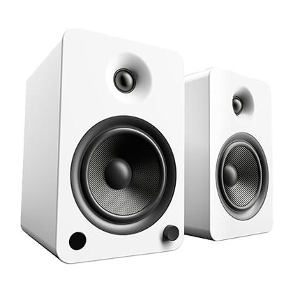

Kanto YU6 Powered Bookshelf Speakers
$ 599
- Bluetooth - Wirelessly connect up to 3 smartphones or tablets to the speaker and take turns playing powerful stereo sound.
- Battery type : Lithium-ion Polymer (22.2Wh)2) 20 hours of playtime(varies by volume level and content)
- IPX7 Waterproof
- Take crystal clear calls from your speaker with the touch of a button thanks to the noise and echo-cancelling speakerphone.
- Build your own ecosystem by connecting multiple JBL Connect enabled speakers together to amplify the listening experience.